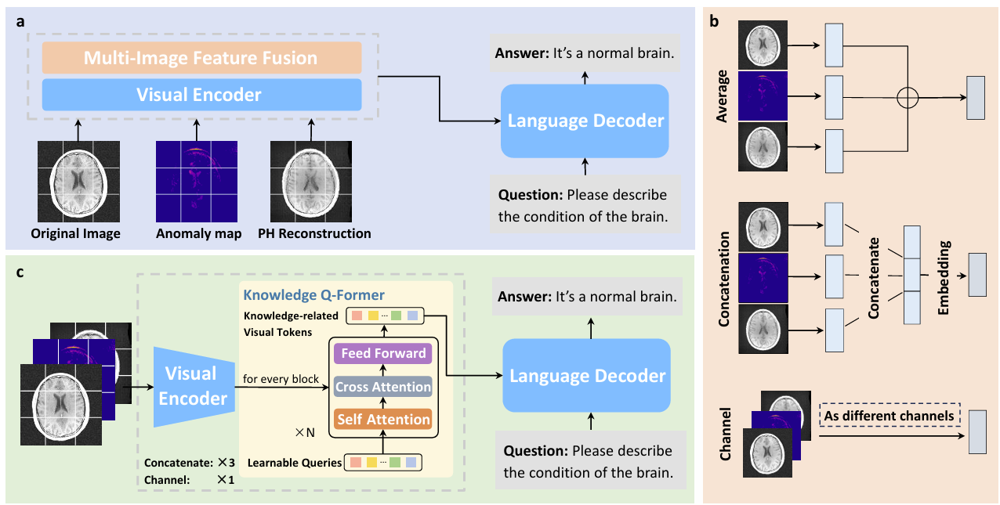
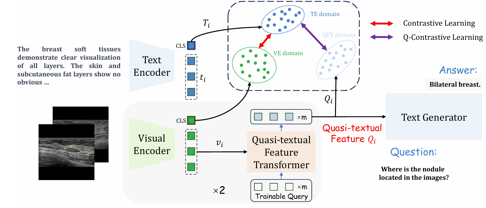
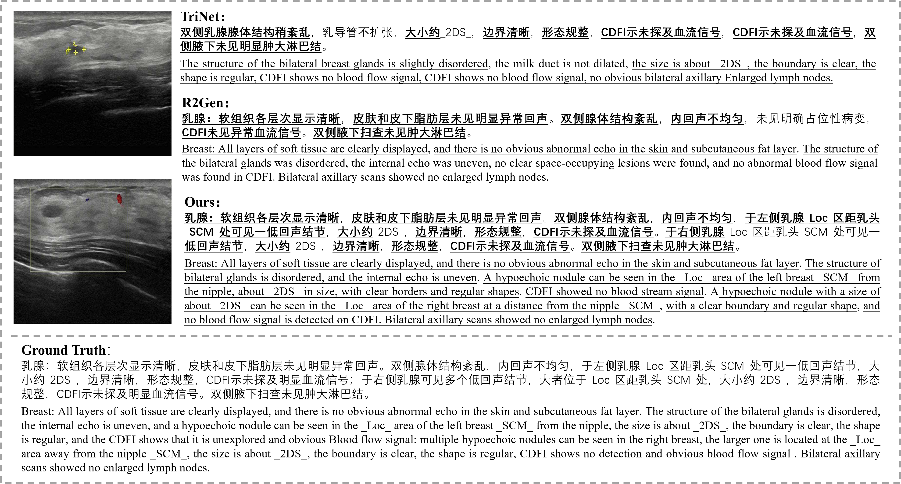

Short Bio
|
I am currently a first year Ph.D. student in the School of Computation, Information and Technology, Technical University of Munich, supervised by Prof. Julia Schnabel. I am funded by the Munich Center for Machine Learning (MCML).
Previously, I received the M. Eng. degree from University of the Chinese Academy of Sciences , under the supervison from Prof. Ying Hu.
I am a dedicated researcher focused on the intersection of deep learning and healthcare, particularly in the analysis of medical images. My passion lies in improving the practicality of deep learning algorithms, with a primary focus on Vision and Language models, Cross-Modality Generation, and Multi-Modality Learning. Through my work in these areas, I aim to advance deep learning techniques and their transformative impact on healthcare.
|
Publications
|

|
Language Models Meet Anomaly Detection for Better Interpretability and Generalizability
Accepted by MMMI 2024.
Jun Li, Su Hwan Kim, Philip Mller, Lina Felsner, Daniel Rueckert, Benedikt Wiestler, Julia A. Schnabel, Cosmin I. Bercea.
[paper]
[project]
|
|

|
Design as Desired: Utilizing Visual Question Answering for Multimodal Pre-training
Accepted by MICCAI 2024.
Tongkun Su*, Jun Li*, Xi Zhang, Haibo Jin, Hao Chen, Qiong Wang, Faqin Lv, Baoliang Zhao, Yin Hu
[paper]
|
|

|
Ultrasound Report Generation with Cross-Modality Feature Alignment via Unsupervised Guidance
IEEE Transactions on Medical Imaging (IF:10.6).
Jun Li, Tongkun Su, Baoliang Zhao, Faqin Lv, Qiong Wang, Nassir Navab, Ying Hu, Zhongliang Jiang.
[paper]
[project]
|

|
A Self-guided Framework for Radiology Report Generation
Accepted by MICCAI 2022.
(Early Accept)
(Student Travel Award, Top 5%)
Jun Li, Shibo Li, Ying Hu, Huiren Tao.
[paper]
[project]
|

|
XctNet: Reconstruction network of volumetric images from a single X-ray image
Computerized Medical Imaging and Graphics (CMIG), 2022.
Zhiqiang Tan, Jun Li, Huiren Tao, Shibo Li, Ying Hu .
[paper]
|
Awards
- National Scholarship, from the ministry of Education of China, 2022.
- Outstanding Student, from University of Chinese Academy of Sciences, 2021-2022.
- Outstanding Student Leader, from University of Chinese Academy of Sciences, 2021-2022.
- National 1th Prize in RoboMaster University Technical Challenge, 2019.
- National 1th Prize in RoboMaster University Championship, 2019.
- National Special Prize in RoboMaster University Technical Challenge, 2018.
- National 2th Prize in RoboMaster University Championship, 2018.
- Pengcheng scholarship of Shenzhen University (Top 1%), 2019.
|
Service
- Conference Reviewer:
- International Conference on Medical Image Computing and Computer-Assisted Intervention (MICCAI) 2024.
|
|